Blue so dark it's almost black.
Find The Threshold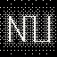
Neon gas.
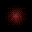
Red light.
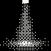
Directed warm light.
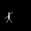
Strobe light.
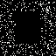
Darkness so dark it seems like an object or a volume (dark substance).
Find The ThresholdLight so bright it seems like an object or a volume (light substance).
Find The ThresholdLight piercing dark substance.
Cut Through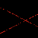
Red lasers piercing dark substances.
Cut Through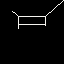
Beam of light that creates and destroys space in the blink of an eye.
Partition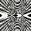
Iridescence.
Read The Interference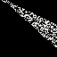
A beam of light through sprayed water.
Proper lighting for a very bright object.
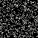
The uniform and persistent glow of dust in the darkness.
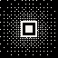
The uniform and persistent glow of gold in the darkness.
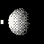
Lamps with different colour temperature illuminating an object.
Isolate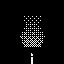
Lighting dark objects with candles.
Reveal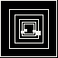
Opposing mirrors.
Iterate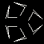
Angled opposing mirrors.
IterateA mirror underneath or behind an object, revealing something that would be invisible.
Reveal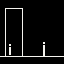
A mirror that lets you see how you look within the space you are in.
Locate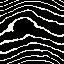
Irregular reflective surfaces.
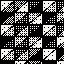
Concave and convex prisms covered with reflective surfaces.
The reflection of a reflection.
Iterate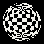
Spherical reflective surfaces.
Compress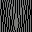
Transparent and irregular surfaces that distort what is seen through them.
Translate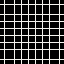
Angled (bevelled) transparent surfaces that distort what is seen through them.
Translate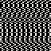
A set of superimposed prisms that geometrically distort what is seen through them.
TranslatePolished tree fossils with sand.
Cut Through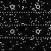
Black concrete.
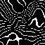
Dark wood.
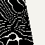
Dark wood painted white where it was cut.
Foreground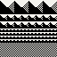
Different resolution of textures carved into the same stone.
Isolate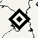
Marble with inlays.
Graft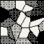
Marquetry of semi-precious stones.
Graft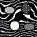
Semi-precious stones embedded in wood.
Graft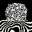
Rough marble or granite on rough wood.
Juxtapose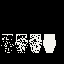
Objects made of variations of the same material.
IsolateThe milky finishes of minerals.
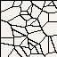
The texture of faience.
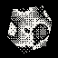
The iridescence of Roman glass.
Weather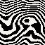
Rough wood grain.
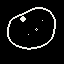
A rough piece of melted glass
Weather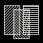
Paint on glass, overlaid.
Lay Over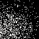
Space defined by smell.
Partition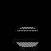
Space defined by light.
Partition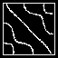
Space defined by sound.
Partition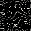
Space defined by temperature and humidity.
Partition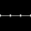
A structure that duplicates when supported by a mirror.
Mirror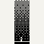
Central vestibular spaces of great height.
Exaggerate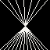
The "V" from an architectural perspective.
Locate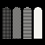
A space made of the same material, illuminated with different colour temperatures.
Isolate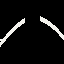
Natural continuation of a body, interrupted.
Work The Gap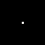
Mono-instrument music with unusually long silences.
Work The GapMonotonous music.
Run It Long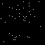
The sound of cicadas.
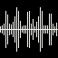
The sound of music contrasted with silence.
Juxtapose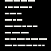
Reading dense poetry as ambient sound.
ReframeA complex clockwork mechanism that moves something that has no function.
Comic shading technique.
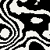
Oil paintings of contrasting tones not well mixed.
White pencil on a slightly different white-toned sheet.
Find The ThresholdRectangular boxes with stripes of different colours arranged in a regular grid.
AlignFabrics laid underwater waving intensely.
Fabrics waving intensely.
The smell of burning resins.
Watching others without them knowing you're watching them
ConcealA small model of the space you are in
ContainObjects arranged equidistantly.
Set A RatioA very large and heavy object that does not rest on the object beneath it.
Work The GapThe relationship between the space you’re in and the taste of something eaten there.
CoupleThe projection of shadows.
Pale white glow
An interior open space exposed to the weather
InvertObjects hanging from the ceiling with bouncing springs.
Rotating graphic spirals.
A good seat to sit and contemplate.
AttendJuxtaposition of the same object but in different scales.
ResizeFurniture that encourages social interaction.
SteerSubtle changes in repetition.
Let DriftHelical spirals.
An object placed on a very high plinth
RelocateA mound of earth shaped by drops of water.
WeatherMounds of a single material.
AccumulateThe frozen water of a waterfall.
An aluminium extrusion.
Solomonic columns.
Different effects of time on the same material.
IsolateJungle vegetation framed by a window.
ReframeA sliced stone
Cut ThroughSuccessively self-contained prisms rotating on the same axis.
ContainObjects that only reveal their beauty if illuminated with a certain type of light.
RevealPainted stone
Lay OverRocks coated with metal.
Gold leaf coating on irregular surfaces.
Asymmetrical makeup
Sepulchral silences.
DepriveThe contrast of wood with bronze.
JuxtaposeA hole of light in dark substance.
Cut ThroughA very small red object in the middle of dark substance.
A cloud moving very slowly, almost still, in a confined space.
ContainA deep tunnel with no visible end.
A spiral space you can only walk sideways, ending in a drop at the centre.
Holes you can look through.
ReframeSecret compartments inside secret compartments.
ContainRound cabinets that turn on their axis.
A stone with smoke coming out of it.
A row of lights switching on and off, giving movement to something that does not exist.
Double symmetry.
MirrorRepetition of an almost identical object.
Let DriftA very thin material that moves as if it were alive.
Greenish glass discs stacked vertically.
Axonometric and isometric perspectives.
Reframe8-bit and pixelation.
DegradeThe whitish texture inside a hole drilled through transparent material.
Cut ThroughThe space a censored piece would have occupied.
Mark What WentAn object in which you cannot see your reflection.
Statues placed inside statues.
Contain